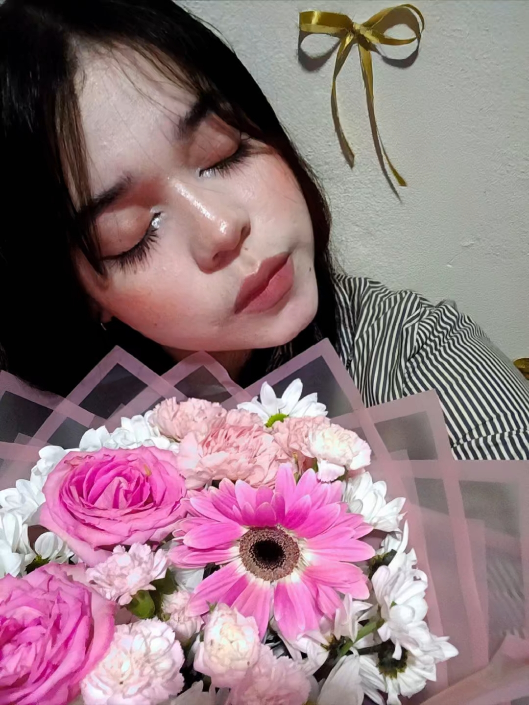

Mi querida futura esposa :3
❦ ✦ ❦Qué hermoso es pensar en el amor y encontrar su significado en tu nombre. Cada día, al despertar y antes de dormir, hay un pedacito de mis pensamientos que siempre te pertenece. Me has enseñado tantas cosas sobre el amor, sobre acompañarnos, comprendernos y crecer juntos. Me encanta saber que somos un equipo, que podemos apoyarnos y que, sin importar los obstáculos, seguimos caminando de la manito.

Como dice la Biblia en Eclesiastés 4:9-10:
Eclesiastés 4:9-10 «Mejores son dos que uno, porque tienen mejor paga de su trabajo. Si caen, el uno levanta al otro».
Y creo que eso representa algo muy bonito de nosotros, mi amorcito: encontrarnos el uno en el otro, darnos fuerzas y acompañarnos en cada etapa de nuestras vidas.
También quiero que sepas lo inmensamente orgulloso que estoy de ti. Verte cumplir ese sueño de ser doctora es algo que me llena el corazón. Sé cuánto lo deseabas y recuerdo la felicidad que había en tus ojitos cuando me mostraste que finalmente estabas dando ese paso. Verte tan feliz, persiguiendo aquello que tanto anhelabas, me hizo inmensamente feliz. Admiro tu esfuerzo, tu dedicación, tu vocación y la fortaleza con la que enfrentas cada desafío. Estoy seguro de que serás una doctora maravillosa, porque tienes un corazón precioso y una calidad humana que admiro profundamente.
Quiero que siempre recuerdes lo maravillosa que eres, mi vida. Admiro tu corazón, tu forma de tratar a los demás, tu ternura y esa manera tan bonita que tienes de dejar huellitas en las personas que te rodean. Eres una mujer admirable y me siento muy afortunado de poder conocerte, amarte y compartir mi vida contigo.
Deseo que nunca dejes de creer en ti, que sigas persiguiendo tus sueños y que te sientas orgullosa de cada paso que das.
Quiero estar a tu lado para celebrar tus logros, abrazarte después de un día agotador, escucharte cuando necesites hablar y recordarte lo increíble que eres.
Es que sigamos construyendo nuestra historia con mucho amor, paciencia y comprensión. Que acompañemos nuestros sueños, que aprendamos juntos y que construyamos ese hogar al que ambos queramos volver.
Quiero seguir eligiéndote cada día y descubrir contigo todas las cosas bonitas que nos esperan.
Te amo muchísimo, mi chiquita hermosa. Estoy profundamente orgulloso de ti, de la mujer que eres, de tu corazón y de todo lo que estás construyendo. Espero que algún día podamos mirar hacia atrás, tomarnos de la manito y sonreír al recordar todo lo que vivimos y conseguimos juntos.
Con mucho amor,
tu alejito :3 💚